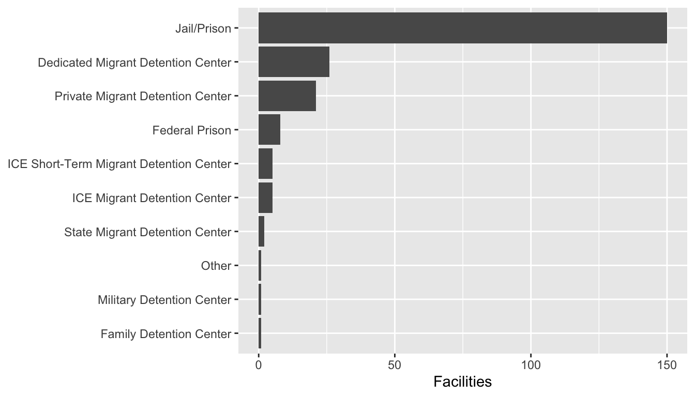
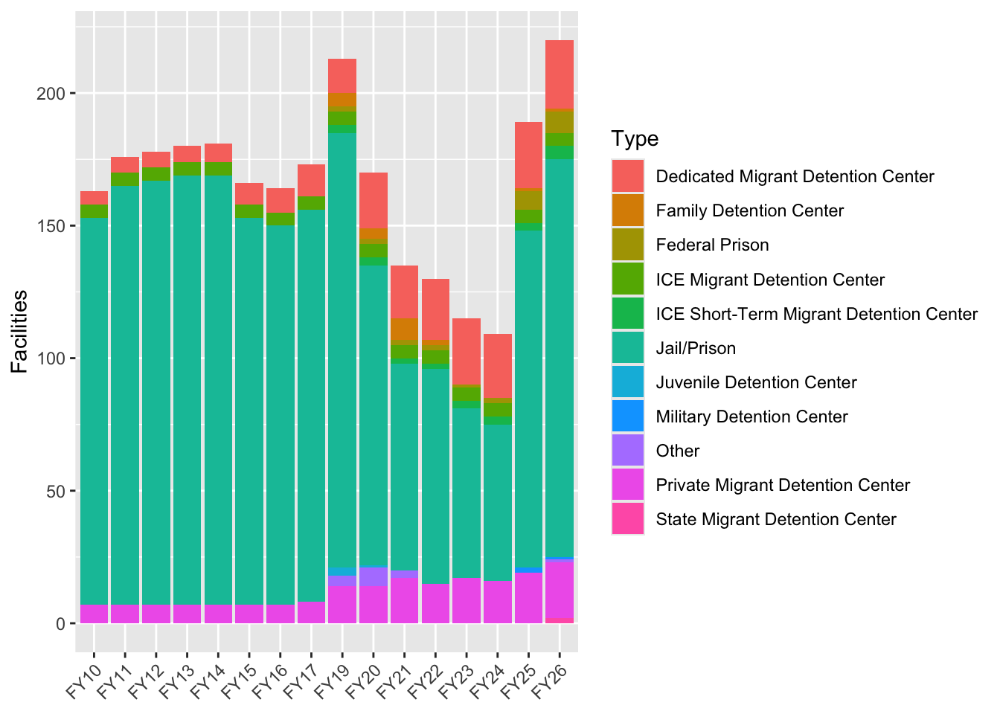
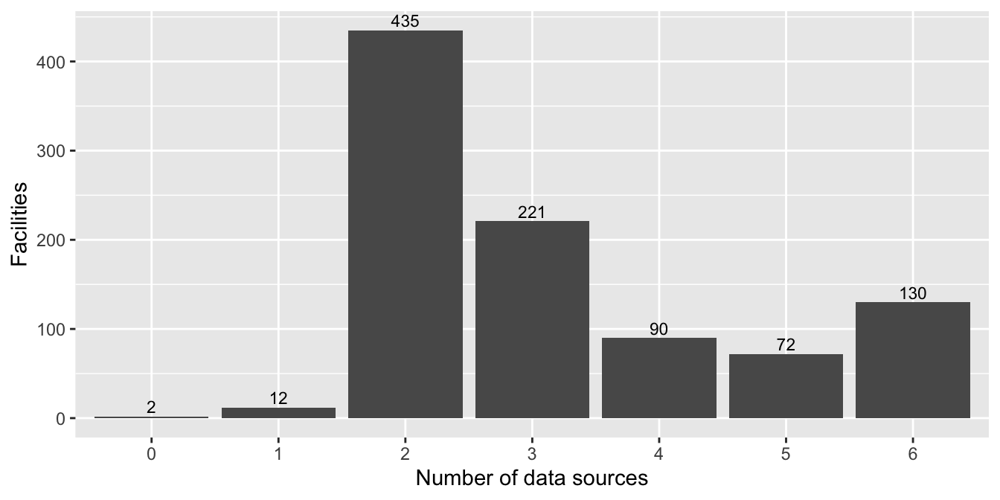
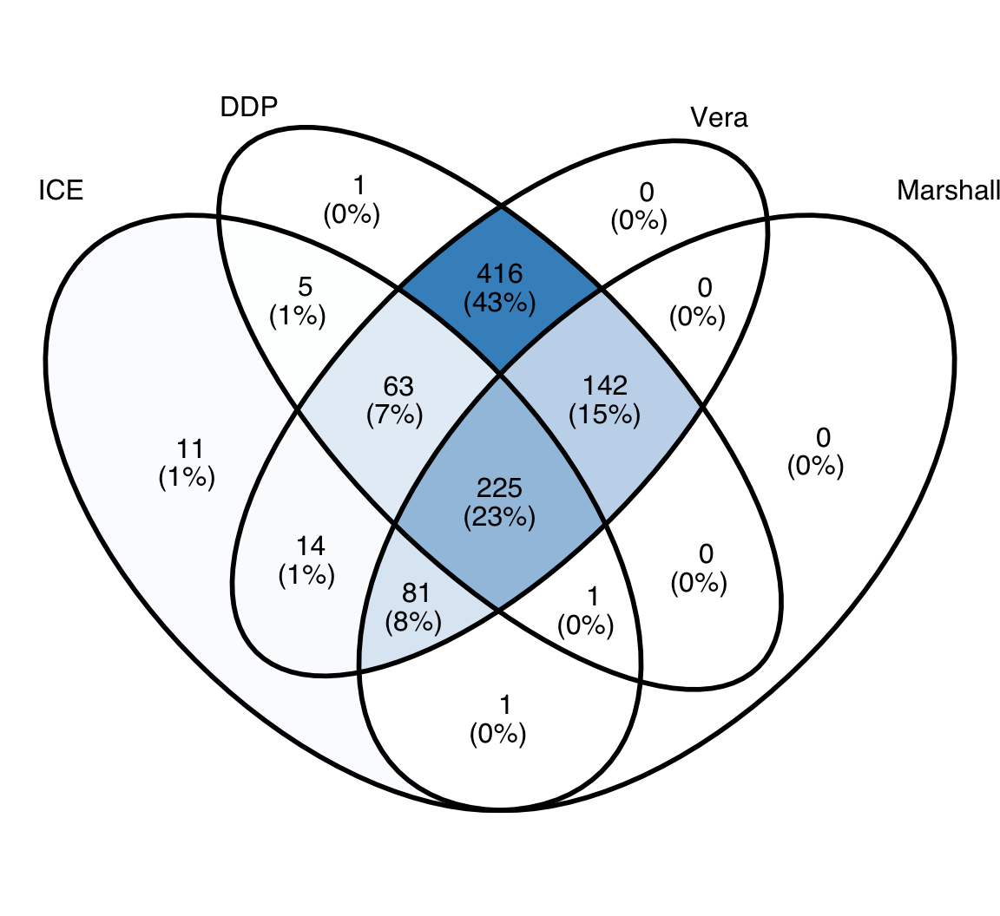
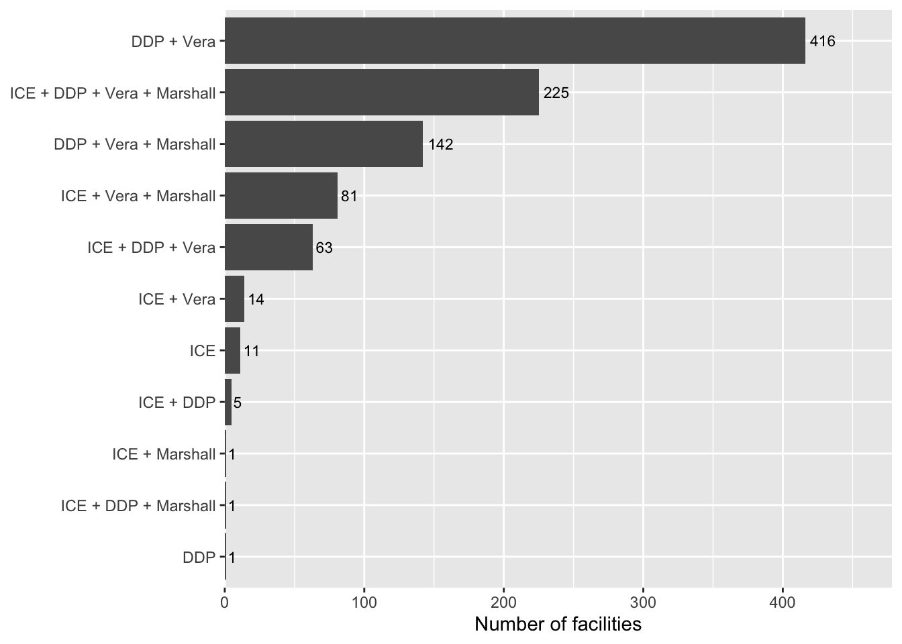

Code
library(targets)
library(dplyr)
library(tidyr)
library(ggplot2)
library(scales)
library(knitr)This report was generated using AI under general human direction. At the time of generation, the contents have not been comprehensively reviewed by a human analyst.
library(targets)
library(dplyr)
library(tidyr)
library(ggplot2)
library(scales)
library(knitr)source_presence <- tar_read(source_presence)
facility_presence <- tar_read(facility_presence)
facilities_panel <- tar_read(facilities_panel)
hold_canonical <- tar_read(hold_canonical_data)
ero_canonical <- tar_read(ero_canonical)This report summarizes the ICE detention facility data assembled by the targets pipeline, covering 16 fiscal years of data. The pipeline tracks facilities across multiple data sources and assigns each a canonical identifier.
source_presence |>
count(id_range) |>
mutate(id_range = factor(id_range,
levels = c("panel", "dmcp_only", "ddp_other", "ero", "hold", "medical"),
labels = c("FY panel (1\u2013398)", "DMCP-only (1001\u20131053)",
"DDP other (1054\u20131203)", "ERO offices (2001\u20132025)",
"Hold facilities (2026\u20132186)", "Medical (3001\u20133226)")
)) |>
kable(col.names = c("ID range", "Facilities"))| ID range | Facilities |
|---|---|
| DDP other (1054–1203) | 158 |
| DMCP-only (1001–1053) | 53 |
| ERO offices (2001–2025) | 25 |
| Hold facilities (2026–2186) | 155 |
| Medical (3001–3226) | 226 |
| FY panel (1–398) | 340 |
| NA | 5 |
The pipeline contains 962 canonical facilities in total. Of these, NA appear in the FY annual statistics panel (FY10–FY26, minus FY18).
most_recent <- tail(sort(unique(facilities_panel$fiscal_year)), 1)
facility_presence |>
count(trajectory) |>
arrange(desc(n)) |>
kable(col.names = c("Trajectory", "Facilities"))| Trajectory | Facilities |
|---|---|
| new | 145 |
| closed | 89 |
| transient | 84 |
| continuous | 40 |
| persistent_gaps | 34 |
In FY26, 219 panel facilities were active.
active_types <- facilities_panel |>
filter(fiscal_year == most_recent) |>
count(facility_type_wiki, sort = TRUE) |>
mutate(pct = n / sum(n))
active_types |>
mutate(pct = percent(pct, accuracy = 0.1)) |>
kable(col.names = c("Type", "Facilities", "Share"))| Type | Facilities | Share |
|---|---|---|
| Jail/Prison | 150 | 68.2% |
| Dedicated Migrant Detention Center | 26 | 11.8% |
| Private Migrant Detention Center | 21 | 9.5% |
| Federal Prison | 8 | 3.6% |
| ICE Migrant Detention Center | 5 | 2.3% |
| ICE Short-Term Migrant Detention Center | 5 | 2.3% |
| State Migrant Detention Center | 2 | 0.9% |
| Family Detention Center | 1 | 0.5% |
| Military Detention Center | 1 | 0.5% |
| Other | 1 | 0.5% |
ggplot(active_types, aes(x = n, y = reorder(facility_type_wiki, n))) +
geom_col() +
labs(x = "Facilities", y = NULL)
facilities_panel |>
filter(!is.na(facility_type_wiki)) |>
count(fiscal_year, facility_type_wiki) |>
ggplot(aes(x = fiscal_year, y = n, fill = facility_type_wiki)) +
geom_col() +
labs(x = NULL, y = "Facilities", fill = "Type") +
theme(axis.text.x = element_text(angle = 45, hjust = 1))
The pipeline draws on five data sources. The table below shows how many canonical facilities appear in each.
source_cols <- c("in_fy_panel", "in_faclist15", "in_faclist17",
"in_ddp", "in_marshall", "in_vera")
source_labels <- c("FY annual stats", "DMCP 2015 (faclist15)",
"DMCP 2017 (faclist17)", "DDP daily population",
"Marshall Project", "Vera Institute")
tibble(
Source = source_labels,
Facilities = colSums(source_presence[source_cols]),
Share = percent(Facilities / nrow(source_presence), accuracy = 0.1)
) |>
kable()| Source | Facilities | Share |
|---|---|---|
| FY annual stats | 392 | 40.7% |
| DMCP 2015 (faclist15) | 208 | 21.6% |
| DMCP 2017 (faclist17) | 201 | 20.9% |
| DDP daily population | 853 | 88.7% |
| Marshall Project | 450 | 46.8% |
| Vera Institute | 941 | 97.8% |
tibble(
Attribute = c("Has DETLOC code", "Is geocoded"),
Facilities = c(sum(source_presence$has_detloc),
sum(source_presence$is_geocoded)),
Share = percent(Facilities / nrow(source_presence), accuracy = 0.1)
) |>
kable()| Attribute | Facilities | Share |
|---|---|---|
| Has DETLOC code | 569 | 59.1% |
| Is geocoded | 962 | 100.0% |
The pipeline assembles geocoded coordinates from three sources: Google Maps API (panel and ERO facilities), The Marshall Project (hold rooms with known addresses), and the Vera Institute (backfill for hold rooms without Marshall coverage).
source_presence |>
filter(is_geocoded) |>
count(geocode_source, sort = TRUE) |>
mutate(share = percent(n / sum(n), accuracy = 0.1)) |>
kable(col.names = c("Geocode source", "Facilities", "Share"))| Geocode source | Facilities | Share |
|---|---|---|
| google_maps+vera_institute | 676 | 70.3% |
| google_maps+marshall_project | 93 | 9.7% |
| preference:google_maps | 76 | 7.9% |
| auto:google_maps+vera_institute | 35 | 3.6% |
| preference:vera_institute | 33 | 3.4% |
| google_maps | 18 | 1.9% |
| divergent | 9 | 0.9% |
| vera_institute | 7 | 0.7% |
| preference:marshall_project | 6 | 0.6% |
| auto:google_maps+marshall_project | 5 | 0.5% |
| NA | 3 | 0.3% |
| preference:manual | 1 | 0.1% |
vera_facilities <- tar_read(vera_facilities)
detloc_lookup <- tar_read(detloc_lookup)
n_vera_total <- n_distinct(vera_facilities$detloc)
n_vera_matched <- sum(unique(vera_facilities$detloc) %in% unique(detloc_lookup$detloc))
n_vera_outside <- n_vera_total - n_vera_matched
vera_outside <- vera_facilities |>
filter(!detloc %in% unique(detloc_lookup$detloc)) |>
count(type_grouped, sort = TRUE) |>
mutate(share = percent(n / sum(n), accuracy = 0.1))
vera_outside |>
kable(col.names = c("Vera facility type", "Facilities", "Share"))| Vera facility type | Facilities | Share |
|---|---|---|
| Non-Dedicated | 279 | 30.4% |
| Medical | 276 | 30.1% |
| Other/Unknown | 142 | 15.5% |
| Federal | 113 | 12.3% |
| Hotel | 51 | 5.6% |
| Family/Youth | 30 | 3.3% |
| Hold/Staging | 19 | 2.1% |
| Dedicated | 8 | 0.9% |
The Vera Institute facility list contains 1464 distinct facility codes, of which 563 match a canonical facility DETLOC. The remaining 901 Vera codes are not in the canonical dataset. These are predominantly jails and county facilities used for short-term detention (“Non-Dedicated”), medical facilities, and federal prisons not tracked in the ICE annual statistics.
source_presence |>
count(n_sources) |>
ggplot(aes(x = factor(n_sources), y = n)) +
geom_col() +
geom_text(aes(label = n), vjust = -0.3, size = 3) +
labs(x = "Number of data sources", y = "Facilities")
source_presence |>
group_by(id_range) |>
summarise(
n = n(),
fy_panel = sum(in_fy_panel),
faclist15 = sum(in_faclist15),
faclist17 = sum(in_faclist17),
ddp = sum(in_ddp),
marshall = sum(in_marshall),
vera = sum(in_vera),
.groups = "drop"
) |>
mutate(id_range = factor(id_range,
levels = c("panel", "dmcp_only", "ddp_other", "ero", "hold", "medical"),
labels = c("Panel", "DMCP-only", "DDP other", "ERO", "Hold", "Medical")
)) |>
kable(col.names = c("ID range", "Total", "FY panel", "faclist15",
"faclist17", "DDP", "Marshall", "Vera"))| ID range | Total | FY panel | faclist15 | faclist17 | DDP | Marshall | Vera |
|---|---|---|---|---|---|---|---|
| DDP other | 158 | 3 | 1 | 1 | 155 | 1 | 156 |
| DMCP-only | 53 | 44 | 46 | 31 | 20 | 53 | 52 |
| ERO | 25 | 0 | 0 | 0 | 23 | 23 | 23 |
| Hold | 155 | 0 | 0 | 0 | 155 | 119 | 154 |
| Medical | 226 | 0 | 0 | 0 | 226 | 0 | 226 |
| Panel | 340 | 340 | 160 | 168 | 270 | 252 | 327 |
| NA | 5 | 5 | 1 | 1 | 4 | 2 | 3 |
The pipeline draws on four broad data source families. This section consolidates the two ICE-published sources (FY19–26 annual statistics and FY10–17 DMCP summary listings) into a single “ICE” category and compares overlap with DDP, Vera Institute, and Marshall Project.
library(ggVennDiagram)
sp_overlap <- source_presence |>
mutate(in_ice = in_fy_panel | in_faclist15 | in_faclist17)
source_sets <- list(
"ICE" = sp_overlap$canonical_id[sp_overlap$in_ice],
"DDP" = sp_overlap$canonical_id[sp_overlap$in_ddp],
"Vera" = sp_overlap$canonical_id[sp_overlap$in_vera],
"Marshall" = sp_overlap$canonical_id[sp_overlap$in_marshall]
)ggVennDiagram(source_sets, label_alpha = 0) +
scale_fill_gradient(low = "white", high = "#4292C6") +
theme(legend.position = "none")
src_names <- names(source_sets)
pair_mat <- matrix(NA_integer_, length(src_names), length(src_names),
dimnames = list(src_names, src_names))
for (i in seq_along(src_names)) {
for (j in seq_along(src_names)) {
pair_mat[i, j] <- length(intersect(source_sets[[i]], source_sets[[j]]))
}
}
kable(pair_mat)| ICE | DDP | Vera | Marshall | |
|---|---|---|---|---|
| ICE | 401 | 294 | 383 | 308 |
| DDP | 294 | 853 | 846 | 368 |
| Vera | 383 | 846 | 941 | 448 |
| Marshall | 308 | 368 | 448 | 450 |
sp_patterns <- sp_overlap |>
count(in_ice, in_ddp, in_vera, in_marshall, sort = TRUE) |>
mutate(
pattern = paste0(
if_else(in_ice, "ICE", ""),
if_else(in_ddp, " + DDP", ""),
if_else(in_vera, " + Vera", ""),
if_else(in_marshall, " + Marshall", "")
) |> stringr::str_remove("^\\s\\+\\s") |> trimws(),
n_sources = in_ice + in_ddp + in_vera + in_marshall
) |>
arrange(desc(n))
sp_patterns |>
select(pattern, n_sources, n) |>
kable(col.names = c("Sources present", "Count", "Facilities"))| Sources present | Count | Facilities |
|---|---|---|
| DDP + Vera | 2 | 416 |
| ICE + DDP + Vera + Marshall | 4 | 225 |
| DDP + Vera + Marshall | 3 | 142 |
| ICE + Vera + Marshall | 3 | 81 |
| ICE + DDP + Vera | 3 | 63 |
| ICE + Vera | 2 | 14 |
| ICE | 1 | 11 |
| ICE + DDP | 2 | 5 |
| 0 | 2 | |
| DDP | 1 | 1 |
| ICE + Marshall | 2 | 1 |
| ICE + DDP + Marshall | 3 | 1 |
sp_patterns |>
filter(n >= 1, pattern != "") |>
mutate(pattern = forcats::fct_reorder(pattern, n)) |>
ggplot(aes(x = n, y = pattern)) +
geom_col() +
geom_text(aes(label = n), hjust = -0.2, size = 3) +
labs(x = "Number of facilities", y = NULL) +
scale_x_continuous(expand = expansion(mult = c(0, 0.15)))
225 facilities (23.4%) appear in all four source families. 142 appear in DDP + Vera + Marshall but not any ICE-published source — these are primarily hold rooms and staging facilities that ICE does not include in its published statistics. 11 facilities appear only in ICE-published data with no external corroboration; these are mostly closed or short-lived sites with no DETLOC code.
Panel facilities (IDs 1–398) with limited source coverage:
panel_gaps <- source_presence |>
filter(id_range == "panel") |>
filter(n_sources <= 1) |>
select(canonical_id, canonical_name, in_fy_panel, in_faclist15,
in_faclist17, in_ddp, in_marshall, in_vera, has_detloc) |>
arrange(canonical_id)
panel_gaps |>
kable(col.names = c("ID", "Name", "FY panel", "FL15", "FL17",
"DDP", "Marshall", "Vera", "DETLOC"))| ID | Name | FY panel | FL15 | FL17 | DDP | Marshall | Vera | DETLOC |
|---|---|---|---|---|---|---|---|---|
| 59 | CBP Chula Vista BPS | TRUE | FALSE | FALSE | FALSE | FALSE | FALSE | FALSE |
| 60 | CBP San Ysidro POE | TRUE | FALSE | FALSE | FALSE | FALSE | FALSE | FALSE |
| 102 | Denver Contract Detention Facility (Cdf) Ii | TRUE | FALSE | FALSE | FALSE | FALSE | FALSE | FALSE |
| 146 | Fulton County Jail Indiana | TRUE | FALSE | FALSE | FALSE | FALSE | FALSE | TRUE |
| 229 | Mccook Detention Center | TRUE | FALSE | FALSE | FALSE | FALSE | FALSE | TRUE |
| 341 | South Texas Family Residential Center | TRUE | FALSE | FALSE | FALSE | FALSE | FALSE | FALSE |
| 353 | Sunny Glen Cld Home NDR Center | TRUE | FALSE | FALSE | FALSE | FALSE | FALSE | FALSE |
| 363 | Tornillo-Guadalupe POE | TRUE | FALSE | FALSE | FALSE | FALSE | FALSE | FALSE |
8 panel facilities appear in only one data source. Of these, 6 have no DETLOC code, limiting the ability to link them across datasets.